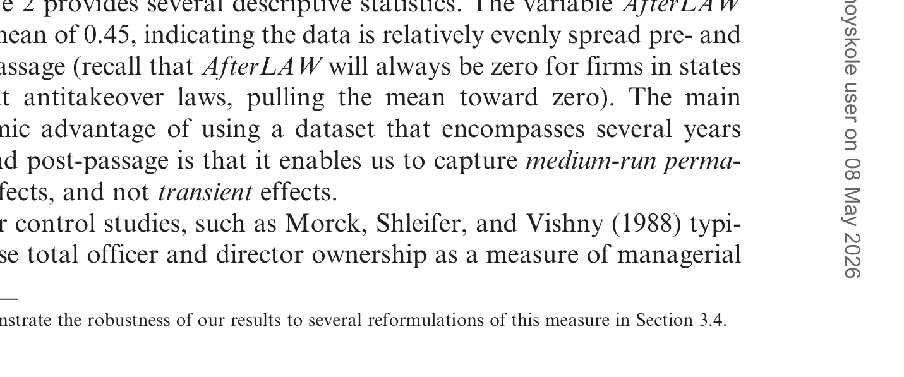
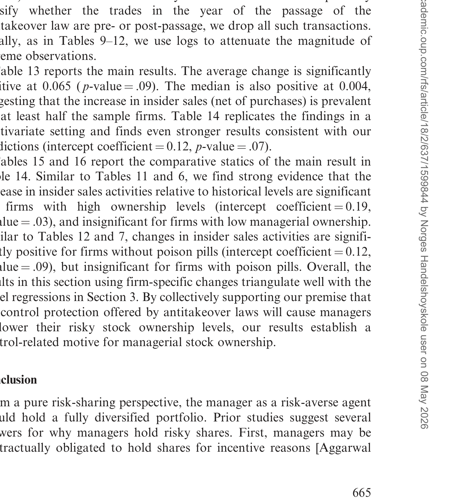
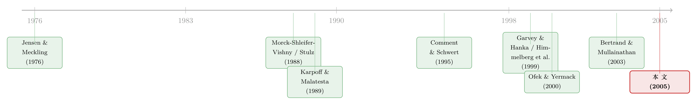

少持股，也能照样说了算——一道藏在「反收购法」里的控制权暗账
本文读的是 Cheng, Nagar & Rajan (2005, Review of Financial Studies)：他们借美国各州在 1980 年代中后期陆续通过的「第二代反收购法」做自然实验，发现法律一旦落地，注册在那些州的公司里，董事和高管会显著减持自家股票——中位持股水平大约下降 12.3%。而且这种减持只发生在初始持股高、且没有毒丸的公司。换句话说，管理层之所以一直攥着那么多风险敞口很大的股票，很大一部分是为了「控制权」；一旦外部收购的威胁被法律削弱，他们就乐得卖掉一些、落袋为安。
1 一个反直觉的开场：股票多，到底是好事还是坏事？
先做一道老题。
一家公司的老板（这里泛指董事和高管这支「管理团队」）手里攥着很多自家股票，你会怎么解读？
教科书上的标准答案来自 Jensen 和 Meckling (1976)：持股是激励。老板和公司绑在一条船上，股价涨他赚、股价跌他亏，于是他会拼命把公司做好。持股越多，利益越一致，代理成本越低。这是「持股 = 好事」的故事。（关于这条主线五十年来的演化，可参见《债务这副药，为什么不能全吃？——重读 Jensen 和 Meckling 五十年》。）
但很快，另一拨人——Morck, Shleifer, and Vishny (1988)、Stulz (1988)——指出了硬币的另一面：持股也是控制权 (control)。手里票越多，外面想来收购、想来「换掉你」的人就越难得手。持股于是成了老板给自己修的护城河，把他和「公司控制权市场 (market for corporate control)」的纪律隔开。这是「持股 = 坏事（至少对股东）」的故事。
同一个变量，两种截然相反的含义：一面是激励，一面是壁垒。问题来了——
我们怎么知道，老板手里那些股票，到底有多少是为了「干好活」，又有多少是为了「保住位子」？
这正是本文要回答的问题。而它的麻烦之处，恰恰在于这两种动机搅在一起、谁都看不见。
2 老办法的死结：内生性
最自然的想法，是去看「持股—业绩」的关系。Morck, Shleifer, and Vishny (1988) 就是这么做的：把公司价值对管理层持股做回归，看那条曲线长什么样，再从形状里反推出激励效应和控制效应各占多少。
但这里有个绕不开的死结：管理层持股本身是内生的 (endogenous)。
Himmelberg, Hubbard, and Palia (1999) 把这个问题讲得很透：持股不是从天上掉下来的外生数字，它和公司业绩一样，都是劳动力市场、产品市场、资本市场同时出清的结果。一家公司「该」有多少内部人持股，取决于它的规模、风险、成长性、监督难度等一大堆我们观测不全的东西。你拿持股去解释业绩，等于拿一个内生变量去解释另一个内生变量——系数到底在说什么，没人讲得清。
那条出路是什么？理论上，你可以写一个完整的结构模型 (structural model)，把控制、激励、风险一起内生地解出来。但 Himmelberg, Hubbard, and Palia (1999, 第 5.2 节) 和 Angrist and Krueger (2001) 都泼了冷水：结构方程的结果对设定和工具变量极其敏感，而那些工具变量又往往很难有说服力。
于是，一个自然的问题是：有没有办法绕开结构模型，直接把「控制权价值」这一块单独拎出来？
3 真正关键的一步：找一个只动「控制权」的外生冲击
本文的巧思就在这里。
作者借用了 Angrist and Krueger (2001) 倡导的那套思路：你不需要把整个均衡解出来，只需要两样东西——
- 一个关于均衡持股水平的简约式 (reduced-form) 设定；
- 一个只冲击其中某一条渠道的外生事件，再加一个「这个冲击会怎样改变均衡持股」的猜想。
那个外生事件，就是 1980 年代中后期美国各州陆续通过的第二代反收购立法 (second-generation antitakeover legislation)。
故事的背景是：1982 年，美国最高法院在 Edgar v. Mite Corp. 案中以「管辖权越界」为由，否决了 37 个州的第一代反收购法。随后各州改弦更张，推出了第二代。1987 年最高法院在 CTS v. Dynamics 案中裁定这类法律只要不违反 1968 年的 Williams Act 就有效，于是立法浪潮席卷全国（见表 1 的各州通过年份）。这些法律主要有三种形态：
- 控制权股份收购法 (control share acquisition, CS)：收购方买来的股票要不要有投票权，得由其他股东投票说了算；
- 公平价格法 (fair price, FP)：收购方必须为收购目的买入的股票付一个「公平价」（比如取前两年最高买入价），借此抬高收购成本、堵死两段式要约；
- 业务合并法 (business combinations, BC)：在一段冻结期内，除非董事会点头，否则收购方不得展开后续的业务合并。
大量研究——Jensen (1988)、Karpoff and Malatesta (1989)、Comment and Schwert (1995)、Bertrand and Mullainathan (1999a, 2003)——都认为这些法律确实抬高了收购门槛、增强了在位管理层的壁垒。Comment and Schwert (1995) 还发现立法后收购溢价上升，说明外部人发起收购变贵了。
为什么这是一个只动控制权的好冲击？因为它来自公司外部（州议会），不是公司自己折腾出来的；而且 Garvey and Hanka (1999) 在 1203 家公司里只找到 9 家可能存在「为保护特定公司而立法」的内生性嫌疑——比例极低，可以当外生处理。
这里要分清楚一对相邻概念：反收购法 (antitakeover laws) 是州立法，外生于公司；毒丸 (poison pills)、反收购章程修正案是公司内部自己采纳的防御工具，是内生的。本文的识别力，全靠前者的外生性；后者则被巧妙地拿来当横截面的「对照刻度」——这一点我们后面会讲到。
那么，猜想是什么？
外部收购的威胁被法律削弱后，老板不再需要持有那么多股票也能保住控制权。而持股是有成本的——Aggarwal and Samwick (1999)、Hall and Murphy (2002) 都指出，把财富集中押在一只不能分散的、价格随机波动的股票上，对一个风险厌恶的人是负担。两边一权衡，本文的主预测就出来了：
反收购法通过之后，管理层会减持自家股票。
这就是作者所谓的「显示偏好 (revealed preference)」论证——你不必问老板「你持股是为了控制权吗」，你只要看：当控制权的威胁被外生地拿掉一块，他用脚（用卖单）投了什么票。
4 识别策略：简约式回归，与一个「双重差分」的骨架
把上面的逻辑落到计量上，本文的第一套设定是一个面板回归 (panel regression)，每个公司—年份一个观测。沿着 Demsetz and Lehn (1985) 的传统，管理层持股被一组公司与行业特征所驱动，而作者要看的，是在控制住这些特征之后，「反收购法是否已生效」这个开关带来的增量效应：
$$ \text{Ownership}_{it} = \alpha + \beta\,\text{AfterLAW}_{it} + \gamma'\,X_{it} + \varepsilon_{it} $$
这里的几个角色要讲清楚：
- \(\text{AfterLAW}_{it}\) 是核心解释变量——一个 0/1 开关：公司 \(i\) 注册所在州的反收购法在 \(t\) 年是否已经通过。它的均值是
0.453（见表 2），说明样本期里大约 45% 的公司—年份处在「法律已生效」状态。 - \(X_{it}\) 是一组公司特征：股权市值、年度股票回报、市净率 (market-to-book)、公司风险、杠杆、大宗持股比例 (block) 等——它们间接吸收了期权授予等其他薪酬因素。
- \(\beta\) 就是我们要的那个数：法律生效后，持股相对于「反事实」下降了多少。
这个设定的骨架，其实就是一个双重差分 (difference-in-differences, DiD)：处理组是「注册在最终通过了反收购法的州」的公司，对照组则天然存在——表 1 里那几个始终没有通过任何反收购法的州，它们的公司构成了一个现成的控制子样本。识别靠的是各州通过年份的错峥差异 (staggered timing)：有的州 1984 年就通过（如密苏里、伊利诺伊、明尼苏达），特拉华要等到 1988 年。同一时刻，有的公司「已处理」、有的「未处理」，这就把全国性的时间趋势从效应里洗了出去。

Table 2: provides several descriptive statistics. The variable AfterLAW
值得一提的是作者对「该看哪部法律」的处理。Bertrand and Mullainathan (1999b, 2003) 认为三类法律里业务合并法 (BC) 最严厉，于是只盯它。但本文（连同 Garvey and Hanka (1999)、Barnhart, Spivey, and Alexander (2000)）选择不区分法律类型，把某一时段内通过的任何一种反收购立法都算数。理由很朴素：这些法律的通过往往相互触发，投资者可能在看到前一部法律时就已经预期到后一部，因此「市场反应小」未必等于「法律弱」。这是个诚实的处理。
5 数据
- 样本：Forbes 500 公司，时间窗
1984–1991。选大公司有几层考虑：Mitchell and Mulherin (1996) 发现 1982–1989 年间 57% 的美国大公司要么成了收购标的、要么自我重组，收购威胁真实；而且在大公司里，「内部人卖股是因为掌握私有信息」这类替代解释证据很弱（Lakonishok and Lee (2001)）。 - 入样条件：1984–1991 年间至少 4 次进入 Forbes 500 榜单，且连续 4 个会计年度公开交易——这是在面板数据需求与生存偏差之间的折中。
- 数据来源：管理层持股与公司特征来自年度委托书、10-K 与 Forbes 高管薪酬调查（与 Yermack (1995) 同一套数据）；反收购法通过年份取自 Bertrand and Mullainathan (1999b, 2003)；毒丸数据用 Comment and Schwert (1995)；股价与收购数据来自
CRSP；财务与注册地数据来自COMPUSTAT，并以 CompactD/SEC 和委托书补全。 - 最终样本：
587家公司，分布在44个州，覆盖 144 个三位数、57 个两位数 SIC 行业。约一半公司注册在特拉华（279家），与 Karpoff and Malatesta (1989)、Daines (2001) 等研究一致。其中287家公司在样本期采纳了毒丸。
从表 2 也能读出持股分布的高度偏斜：董事与高管合计持股均值 8.163%、中位数仅 2.800%、标准差高达 12.898；CEO 单独持股均值 2.389%、中位数更是只有 0.150%。少数人攥着大块、多数人持股很薄——这个分布形态，正是后面「为什么减持只发生在高持股公司」那个结论的伏笔。
6 主要结果：少持股，照样说了算
第一个、也是头号结果：法律通过后，注册在该州的公司里，董事和高管显著减持。 在控制了公司特征的简约式回归里，持股中位水平下降约 12.3%。同时，持有至少 5% 股份的内部董事比例，在立法后也显著下降。
接着，作者用第二套设定做了一个漂亮的稳健性检验：不用公司特征当控制，而是让公司自己当自己的对照——直接看每家公司跨越立法前后的持股变化量，每家公司压成一个观测。这套「公司自身固定效应」式的设定（Section 4）与第一套思路完全不同，却得到了一致的结论：平均变化显著为负。两套差异巨大的设定都指向同一个方向，可信度自然就上去了。

Table 13: reports the main results. The average change is significantly
但真正把「控制权」这个故事钉死的，是两个横截面结果——它们才是本文从「相关」走向「机制」的关键。
其一，减持只发生在初始持股高的管理团队。 Morck, Shleifer, and Vishny (1988) 早就指出，持股的壁垒效应要等到越过某个门槛才显现。本文顺着这个逻辑推断：在低持股水平上，管理层的控制本就脆弱，反收购法那点边际帮助不足以让他们舍得卖股；只有在高持股、控制权已然稳固的团队那里，法律的边际价值才最大，减持才会发生。数据正是如此——立法后的减持集中在高初始持股的公司。
其二，减持只发生在没有毒丸的公司。 这一步用得极巧。Karpoff and Malatesta (1989) 发现，反收购法通过时投资者的负面反应只出现在没有毒丸的公司——已有毒丸的公司，管理层早就被有效地壁垒化了，再来一部法律不过是锦上添花。Comment and Schwert (1995) 也发现，在已有反收购法的州里，公司再采纳毒丸几乎没有市场反应。换句话说，毒丸和反收购法互为替代品。如果本文的减持真是「控制权威胁下降」驱动的，那么对那些已有毒丸、威胁本就不高的公司，法律带来的增量保护有限，减持也就该弱。结果确实如此。
这两个横截面，把「会不会只是巧合」的空间挤得很小。
7 排掉那些「不是控制权」的解释
一个聪明的读者此刻会皱眉：减持就一定是控制权动机吗？会不会是别的？作者老老实实地把替代假说一个个摆上桌。
会不会是被迫加薪后的「再平衡」？ Bertrand and Mullainathan (1999b, 2003) 那条著名的「安静生活 (quiet life)」线索说，反收购法削弱了股东约束管理层的能力，老板因此能拿更高的薪酬。如果加薪是通过多发期权实现的，那老板手里风险敞口变大，自然要卖掉一些股票来分散风险（Ofek and Yermack (2000)）——这就和控制权无关了。作者的回应：把当期授予的股票期权直接放进回归当控制变量，结果依然稳健。
会不会是 Stein (1988) 式的「近视」故事反过来？ 即立法前股东逼着老板多持股以抑制短视行为，立法后这种压力消失。作者指出这套逻辑其实是站不住的：在 Stein 的模型里，经理并不担心被收购、而是担心收购方压价，他搞短视行为是一种代价高昂的可信信号；价格形成是短视的起因而非解药，逼老板多持股只会加重而非缓解短视。所以这条线推不出本文的事实。
会不会是「私有信息」？ 即老板本来攥着股票是在等收购租金，立法后发现收购无望才抛售。这要求立法前的股价没有包含收购租金，也即老板私下知道有人要来收购。但 Grossman and Hart (1980) 的逻辑、以及 Stulz (1988)、Harris and Raviv (1988) 的模型都假设经理对收购方没有私有信息——收购方有一万个理由偷偷买票、不让管理层察觉。加上 Lakonishok and Lee (2001) 发现内部人的预测能力仅限于小公司、且主要体现在买入而非卖出，本文研究的恰是大公司、内部人卖出，私有信息假说在这里最弱。
会不会反而该「捂股」？ 控制权理论还有一面：高持股能让老板从收购方那里敲出更高的溢价（Stulz (1988)、Harris and Raviv (1988)；Stulz, Walkling, and Song (1990) 发现高管理层持股的标的在多方竞价中拿到更多收益）。若反收购法进一步抬高了管理层的议价能力，老板理应捂住股票等未来的租金——这恰与本文预测相反，因此是个可证伪的对照。数据支持的是减持，不是捂股。
层层排除之后，剩下的最干净的解释，就是控制权动机本身。
8 文献脉络
把这条线索拉直来看，会更清楚本文站在哪儿。
最上游是 Jensen and Meckling (1976) 的激励观——持股让代理成本下降。接着 Morck, Shleifer, and Vishny (1988) 翻出硬币的另一面，提出壁垒/控制观，并用「持股—业绩」曲线去识别两种效应；Stulz (1988)、Harris and Raviv (1988) 则从资本结构与控制权竞争的角度，给「控制权价值」搭起了理论骨架（一个共同主题是：面临收购威胁的经理会用债务置换非竞争股东的股权，从而抬高自己的持股比例）。
然后，一个方法论上的警钟被 Himmelberg, Hubbard, and Palia (1999) 敲响：持股是内生的，「持股—业绩」回归识别不出因果。Angrist and Krueger (2001) 顺势给出药方——与其硬解结构模型，不如找自然实验。
与此同时，「反收购法是好工具变量」这件事被另一支文献逐步坐实：Karpoff and Malatesta (1989) 量出立法的财富效应、并发现毒丸的替代作用；Comment and Schwert (1995) 给出溢价上升的证据；Garvey and Hanka (1999) 用它研究杠杆（并发现立法后公司降低了债务——这与本文「直接卖股减持」互补，是从「去杠杆间接稀释」之外的另一条减持渠道，相关讨论可参见《杠杆是「果」，不是「因」》）；Bertrand and Mullainathan (1999a,b, 2003) 则反复用它做识别，并提出「安静生活」假说。

本文 (Cheng, Nagar & Rajan, 2005) 正是把这两支汇到了一起：用反收购法这个外生的控制权冲击，去识别 Morck-Stulz-Harris-Raviv 那条线里最难量的东西——管理层赋予股票的控制权价值。它的位置，是「自然实验方法论」与「控制权理论」的交汇点。
顺带一提，反收购在公司治理里还有更迂回的玩法：把股票挂到法律更严的海外市场，其实也能反向充当一道防收购的安排——这层有趣的反转，可参见《把股票挂到国外去，竟是一道防收购的「护城河」》。
9 评论与延伸（Q&A + 研究方向）
(a) 几个可能的疑问
Q：这到底是 DiD 还是别的什么？平行趋势可信吗？
骨架是错峥时点的 DiD：处理组是注册在最终立法州的公司，对照组包括始终未立法的州。识别力来自各州通过年份的差异。平行趋势的可信度，主要靠反收购法的外生性（州议会立法、且 Garvey and Hanka (1999) 显示几乎没有「为护特定公司而立法」的内生性）来背书。需要留个心眼的是：2005 年的论文尚未用上后来 Bertrand, Duflo & Mullainathan (2004) 之后兴起的错峥 DiD 诊断，今天重做会更稳。
Q：减持的「中位数下降 12.3%」是绝对百分点还是相对幅度？
是相对幅度——中位持股水平相对下降约 12.3%，不是「从 x% 降到 (x−12.3)%」。鉴于样本里董事高管合计持股中位数本就只有 2.8%，绝对变化其实很小，但相对幅度可观，且方向一致、横截面上可解释，这才是关键。
Q：用「显示偏好」识别控制权价值，比结构模型强在哪、弱在哪？
强在不需要设定整个均衡，只要一个简约式加一个外生冲击，稳健、透明、对设定不敏感。弱在它只能告诉你「控制权动机在持股决策里确实重要、方向如此」，却给不出一个结构化的控制权价值美元数字——要那个，还是得回到结构模型（如后来量化控制权私利的那支文献）。
Q：「减持只在高持股、无毒丸公司」会不会只是均值回归或样本切割的假象？
这正是作者最用力的地方。两个横截面切割不是随手切的：高持股对应 Morck-Shleifer-Vishny 的壁垒门槛，无毒丸对应 Karpoff-Malatesta 的替代逻辑——都是有理论先验的切法，且两者方向都和控制权故事吻合。若是纯统计假象，很难同时在两个有先验的维度上都「恰好」对上。
Q：和 Garvey-Hanka 的「去杠杆」是不是一回事？
不是，而是互补。Harris-Raviv / Stulz 的机制是：面临威胁时经理用债务换股、抬高自己的持股比例。Garvey and Hanka (1999) 发现立法后公司降杠杆——这会通过增加流通股间接稀释管理层持股比例。本文则证明，除了这种间接稀释，老板还直接卖股减持。两条渠道叠加。
Q：只看 Forbes 500 大公司，外部有效性够吗？
这是自觉的取舍。选大公司是为了让「私有信息」「内部人择时」这类替代解释更弱（Lakonishok and Lee (2001)），代价是结论不能直接外推到小公司——而小公司恰恰可能是控制权动机最强、收购威胁最真实的群体。这是个未解的开口。
(b) 几个可能的研究问题与提案
1. 把「显示偏好」搬到债券持有人/信用市场。 - 【经济故事】反收购法削弱外部纪律后，债权人感知到的代理风险上升，信用利差与债务契约条款 (covenants) 应有反应；而管理层既减持股票、又（如 Garvey-Hanka）降杠杆，债与股的反应方向未必一致。把同一外生冲击同时投到股、债两边，能看出控制权冲击在资本结构两侧的不对称传导。 - 【可行性】中。需要把 1980s 的州立法时点对齐到债券层面的利差与契约数据（如 Mergent FISD 在该年代覆盖有限，是主要障碍），识别沿用现成的错峥 DiD。
2. 用现代错峥 DiD 重估本文，并做事件时间动态。 - 【经济故事】2005 年的设定还是「静态 AfterLAW 开关」。用 Callaway-Sant'Anna 一类估计量画出减持的事件时间路径，能区分「立法前是否已有预期性减持」与「立法后才发生」，直接检验私有信息/预期假说。 - 【可行性】高。数据是现成的（公开委托书、CRSP、COMPUSTAT、B&M 的立法年份），纯方法升级，doable。
3. 外资持有人会不会改变这条控制权逻辑？ - 【经济故事】当公司股东里外资比例上升，外部治理压力的来源变了——外资机构既可能是更主动的监督者，也可能因信息劣势更被动。反收购法的「松绑」效应在高外资持股公司里是更强还是更弱？这把控制权动机与全球化股东结构接起来。 - 【可行性】中。1980s 外资持股数据稀薄；更现实的做法是把识别移到有跨国立法变动、且外资持股可观测的较近样本上。
4. 减持后的现金去哪了，业绩怎么变？ - 【经济故事】本文止于「老板卖了股」。下一个自然的问题是：卖股套现后，公司投资、并购、薪酬结构如何变化？是否印证 Bertrand-Mullainathan 的「安静生活」——经营效率下滑？把减持当作一个内生中介，追踪真实后果。 - 【可行性】高。所需变量都在 COMPUSTAT/委托书里，识别可用「立法暴露度 × 初始持股」的交互。
5. 毒丸作为「替代品」的精确边际。 - 【经济故事】本文用「有无毒丸」做二元切割。更细的问法是：毒丸的强度/类型（触发阈值、死手条款等）与反收购法的类型（CS/FP/BC）之间，替代弹性具体是多少？这能把「壁垒」量到一个连续刻度上。 - 【可行性】中。需要手工编码毒丸条款细节与各州法律条文，工作量大但 doable。
10 我的判断
这是一篇方法干净、克制、可信的论文。它最大的贡献，不在于「发现老板会减持」这个事实本身，而在于识别策略：用一个只冲击控制权渠道的外生事件，加上两个有理论先验的横截面切割（高持股、无毒丸），把「控制权动机」从激励、风险再平衡、私有信息一堆纠缠的解释里干净地剥了出来。两套差异极大的设定得到一致结论，更是加分。在一个充斥着内生性争论的领域里，它示范了「显示偏好 + 自然实验」这条路能走多远。
对识别，我有两点保留。其一，是今天的标准会担心的错峥 DiD 偏误——各州时点不一、处理效应可能随时间异质，2005 年的两步固定效应设定在新的诊断下未必都站得住，值得重做一遍看事件时间路径。其二，是对照组的可比性：始终未立法的州（如得州、加州等）在产业结构、公司类型上与立法州系统性不同，平行趋势更多靠「立法外生」这个先验撑着，而非直接检验出来的。
后续我最想看到的，是把这条逻辑接到信用市场与债券持有人那一侧：同一个控制权冲击下，股东减持、债权人怎么定价？以及，把「老板卖股之后公司发生了什么」这条真实后果链补上——毕竟，显示偏好告诉了我们老板想要控制权，但控制权最终落到谁手里、用来做了什么，才是这场博弈真正的下半场。
参考文献
- Aggarwal, R., and A. Samwick (1999). The Other Side of the Tradeoff: The Impact of Risk on Executive Compensation. Journal of Political Economy 107, 65–105.
- Angrist, J., and A. Krueger (2001). Instrumental Variables and the Search for Identification: From Supply and Demand to Natural Experiments. Journal of Economic Perspectives 15, 69–85.
- Bertrand, M., E. Duflo, and S. Mullainathan (2004). How Much Should We Trust Differences-in-Differences Estimates? Quarterly Journal of Economics 119, 249–257.
- Bertrand, M., and S. Mullainathan (1999a). Is There Discretion in Wage Setting? A Test Using Takeover Legislation. RAND Journal of Economics 30, 535–554.
- Bertrand, M., and S. Mullainathan (2003). Enjoying the Quiet Life? Managerial Behavior Following Antitakeover Legislation. Journal of Political Economy 111, 1043–1075.
- Cheng, S., V. Nagar, and M. V. Rajan (2005). Identifying Control Motives in Managerial Ownership: Evidence from Antitakeover Legislation. Review of Financial Studies 18(2), 637–672.
- Comment, R., and G. Schwert (1995). Poison or Placebo? Evidence on the Deterrence and Wealth Effects of Modern Antitakeover Measures. Journal of Financial Economics 39, 3–43.
- Demsetz, H., and K. Lehn (1985). The Structure of Corporate Ownership: Causes and Consequences. Journal of Political Economy 93, 1155–1177.
- Garvey, G., and G. Hanka (1999). Capital Structure and Corporate Control: The Effect of Antitakeover Statutes on Firm Leverage. Journal of Finance 54, 519–546.
- Grossman, S., and O. Hart (1980). Takeover Bids, the Free-rider Problem, and the Theory of the Corporation. Bell Journal of Economics 11, 42–64.
- Hall, B., and K. Murphy (2002). Stock Options for Undiversified Executives. Journal of Accounting and Economics 33, 3–42.
- Harris, M., and A. Raviv (1988). Corporate Control Contests and Capital Structure. Journal of Financial Economics 20, 55–86.
- Himmelberg, C., G. Hubbard, and D. Palia (1999). Understanding the Determinants of Managerial Ownership and the Link between Ownership and Performance. Journal of Financial Economics 53, 335–384.
- Jensen, M., and W. Meckling (1976). Theory of the Firm: Managerial Behavior, Agency Costs, and Ownership Structure. Journal of Financial Economics 3, 305–360.
- Karpoff, J., and P. Malatesta (1989). The Wealth Effects of Second Generation State Takeover Legislation. Journal of Financial Economics 25, 291–322.
- Lakonishok, J., and I. Lee (2001). Are Insider Trades Informative? Review of Financial Studies 14, 79–111.
- Mitchell, M., and J. Mulherin (1996). The Impact of Industry Shocks on Takeover and Restructuring Activity. Journal of Financial Economics 41, 193–229.
- Morck, R., A. Shleifer, and R. Vishny (1988). Management Ownership and Market Valuation: An Empirical Analysis. Journal of Financial Economics 20, 293–315.
- Ofek, E., and D. Yermack (2000). Taking Stock: Equity-Based Compensation and the Evolution of Managerial Ownership. Journal of Finance 55, 1367–1384.
- Stein, J. (1988). Takeover Threats and Managerial Myopia. Journal of Political Economy 96, 61–80.
- Stulz, R. (1988). Managerial Control of Voting Rights: Financing Policies and the Market for Managerial Control. Journal of Financial Economics 20, 25–54.
- Stulz, R., R. Walkling, and M. Song (1990). The Distribution of Target Ownership and the Division of Gains in Successful Takeovers. Journal of Finance 45, 817–833.
- Yermack, D. (1995). Do Corporations Award CEO Stock Options Effectively? Journal of Financial Economics 39, 237–269.